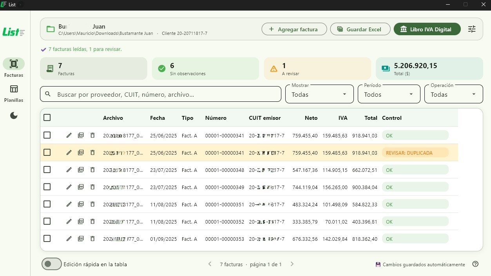

Facturas PDF a Excel
Convertí la información de tus facturas en una planilla que puedas revisar y utilizar en tu trabajo.
PDF→Excel
List te ayuda a transformar facturas PDF en datos útiles, preparar tu Libro IVA Digital y trabajar con planillas sin perder el control de la información.

Herramientas prácticas para reducir trabajo manual y mantener el control en cada paso.
Convertí la información de tus facturas en una planilla que puedas revisar y utilizar en tu trabajo.
Prepará los datos de las facturas para trabajar con el formato de Libro IVA Digital.
Procesá documentos escaneados para extraer información que no siempre está disponible como texto.
Reuní varias planillas en un solo lugar y simplificá la consolidación de información.
Verificá los datos extraídos y corregí lo necesario antes de generar el archivo final.
Retomá tu trabajo con la ayuda del guardado automático de la sesión.
List está pensado para trabajar sin depender de una conexión a internet. Los datos de tus clientes permanecen localmente en tu equipo, según el funcionamiento de la aplicación.
Seleccioná tus PDF o planillas de Excel.
Controlá los datos y editá lo que haga falta.
Generá el archivo para continuar tu trabajo.
¿Querés conocer List, consultar sus funciones o saber cómo conseguirlo? Escribime y lo conversamos.
Consultar por WhatsApp